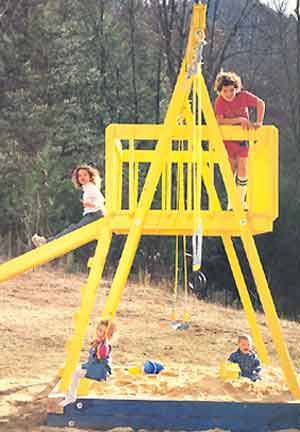
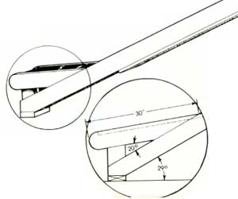
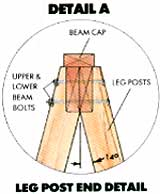
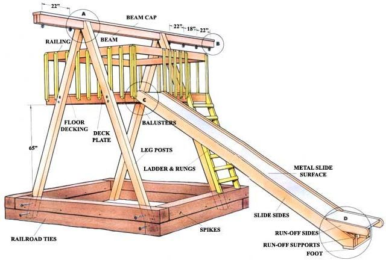
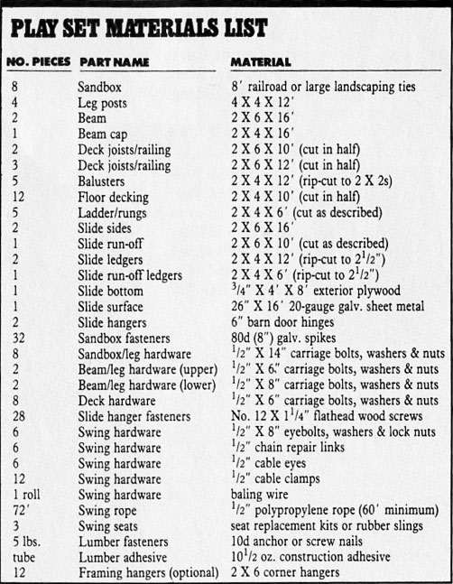

MOTHER has never been one to turn down a good offer, so when Iowa reader Paul Swenson agreed to share his plans for a back-yard recreation set, we took him up on it. His design came from studying play sets in public parks and looking through dozens of catalogues. His motivation? Downright practical:
"The garden was becoming a pain, so I put a sandbox there, and I made it big so I could play in it with my daughter. The measurements are based on what could be done using 8' railroad ties, standard lumber and nice round numbers."
Happily, the information and sketches Paul provided allowed our research and workshop specialist, Dennis Burkholder, to build a duplicate in a staffer's back yard (he also worked in a few changes for improvement's sake). The finished play set, dubbed "swing city" by the kids (more for the capital sprawl of its 12' X 16' X 20' dimensions than for its hanging hardware), was a sensation even before bolt one was drawn tight.
Before breaking ground in your own yard, see if you have the room. Though the sandbox is less than 9' square, the top beam extends some 2½' and 5 ½' beyond either side. The slide projects nearly 12' forward of the sandbox.
If space isn't a problem, materials and tools should be a cinch. All the lumber and hardware you'll need are itemized in the materials list-nothing unusual, except perhaps for the galvanized slide surface, which any sheet metal shop should be able to fold up for about $40. An average collection of tools will get the job done, but in addition to a tape measure, claw hammer, large screwdriver, locking pliers and adjustable wrench, you should have a crosscut handsaw, a coping saw, a level and a protractor, a shovel, a rake and a 3/8” electric drill with 1/8" and 3/l6" bits and a long ½" spade bit. A circular saw can be used for the few rip cuts if you don't have access to a table saw.
Since the playground will constantly be exposed to the elements, pressure-treated lumber and galvanized or plated hardware are the best choices. Latex paint and other wood-surface sealers can and probably should be used, but it's a good idea to let the wood weather for at least three months before applying any sealer or paint coating.
Once your materials are ready, you can begin the assembly of the sections, starting with the sandbox and the overhead beam framing, moving to the deck, its railing and the ladder, then tackling the slide. The swing hardware can be put up last.
To set the sandbox, level a 9' by 9' area, and place the first course of foundation timbers in a square, with ends meeting sides. Overlap the second course on top so the upper joints don't meet the lower ones, then spike the two courses together from the sides.
The beam consists of two 2 X 6s capped with a 2 X 4. It can be glued and clamped, then nailed together ... or even bolted, if you wish. Refer to the drawing, and mark the holes for the swing eyes first, so you don't put a nail in the wrong place. When the beam's finished, drill the eye holes through its center and bolt in the six eyes. Now position and drill the four ½" cross-holes where the legs will join the beam. The distance between the two sets of holes should be 3½" less than the actual inside measurement of the sandbox.
Check the leg detail, and notch each of the four posts to the angle shown, then drill cross-holes to match those on the beam. Lay the front set of legs on the ground, and use the 6" and 8" carriage bolts to position the beam. Use a couple of the ladder 2 X 4s as temporary nailed braces to hold the rear legs up as you guide them over the bolt ends and tighten the nuts.
To raise the structure, cross-brace the legs and beam with the two 12' slide 2 X 4s, and tie the swing rope to the approximate center of the beam. Then position the whole thing at the edge of the box, and have two people lift and "walk" the leg pairs up, while a third pulls the rope from the opposite side. Square the legs up against the box corners, and fasten them to each course with the ½" X 14" carriage bolts.
After removing the temporary braces, cut a 10' 2 X 6 to make two 5' pieces, and attach them to the insides of the legs, with their lower edges 65" above the surface of the box. Use 6" carriage bolts, and check to make sure the boards are level. Cut the four floor joists to match the distance between the boards, then nail them in place from the ends (for extra strength, use metal framing hangers, available from a lumber supplier). Cut and nail down the 2 X 4 decking planks (they should be spaced about 3/16” apart, and shouldn't extend beyond the framing), then measure and nail the top railing in place so its upper edge is 30" above the floor.
The balusters can be either bought ready-made or cut from 2 X 4s. The ends should be tapered at a 45° angle to shed standing water. Nail two uprights to each corner first, then space the others evenly between; they'll fall about 7½" apart, and you'll have to trim eight of them to fit against the legs.
Leave the front open until after you've fitted the ladder and slide.
To make the ladder, simply taper one end of two 6' 2 X 4s so they're flush to the face of the deck frame when set on the box. The lower ends can be trimmed and the rails then nailed in place at both ends. The eight 23" rungs can be spaced 8" apart-or closer if you have small children and an extra 6' board.
Ideally, the slide metal should be folded into two 20 "-wide sections-one 31" long and the other 144" in length. If the sheet metal shop cannot make a 12' fold, it's OK to accept one 8' and one 4' piece. Notice that the 20" width represents only the surface; there is an additional 3" lip on each side-and 2" lips at the ends-of each section, both of which should resemble trays when completed.
Cut the ¾ plywood sheet to fit the trays; the boards should be 20" wide by 31", 48" and 96" in length, more or less. Then cut one 12" X 17" piece from what's left over. Use a power saw to rip (slice full length) 1" from the two 12' 2 X 4s and the remaining 6' piece, and cut the short board into two 31" pieces. Glue and nail these rip-cut ledgers to the plywood so they're flush with the edges, then slip the wooden assemblies into their respective metal trays, and drive a few tacks through the side lips.
The slide's 16' sideboards should each be cut to 15', rounded at one end and double-beveled at the other. That done, glue and nail the 12' slide section to the boards so it's flush with the rounded ends and 1¾” below the upper edges, taking care not to let the nail points poke through the sides. A 23" 2 X 6 can be added to the frame's bottom bevel to serve as a supporting foot.
To fasten the slide to the deck frame, first nail the 12" X 17" plywood section beneath the slide's upper end, then attach the 6" hinges to that board and to the front joist. Both the nails and the hinge screws should be no more than 1¼” long; feel free to use ¼" bolts at the joist for extra strength.
The run-off sideboards are each cut to 30" in length, then rounded at one end and beveled to a 20° angle at the other. Fasten the 31" slide section to its boards so it will butt against the main slide, then nail the run-off sides and the ledgers to the main frame. Supports cut from the 2 X 6 scrap can be nailed to join the run-off and main side frames.
At this point, you're ready to wrap things up. Add the remaining balusters to the front of the deck, then thread the ½" rope through your swing-seat material and clamp it to itself. The tail should be wire-tied to the main rope, then both taped together. Seats, by the way, can be purchased as replacement kits or simply cut from old tires or industrial conveyor belts. Rings or a trapeze bar might also be used, especially at the outer-most position.
Determine the length of rope needed for each swing or bar, then bind the upper loops in the same manner as the lower ones. Use a metal cable eye at any place where the rope contacts a steel fastener; then you can connect the eyes to eyebolts with sturdy chain repair links.
The last step, of course, is to shovel about two cubic yards of clean, washed sand-known to brick masons as Columbian sand-into the box. It's a dismal prospect, but if you have the sand delivered, it can probably be dumped into place. Don't worry about what to do afterward. Your kids- and most of the neighbors'-will take care of that part all by themselves.
Editor's Note: Those who might want a bit more guidance in building a back-yard recreation set of their own should turn to 129 of this issue.
|
 BOB CASAGRANDE You'll have to think big, even when building for little people. The play set takes up a 16' X 20' space and stands about 12' tall. |
 ILLUSTRATION BY DON OSBY It may look like a big job, but this back-yard playground is within the abilities of most any would-be woodwright. Just be sure to site it and plan carefully before you touch saw to lumber! |
 ILLUSTRATION BY DON OSBY |
|
 |
 |
|